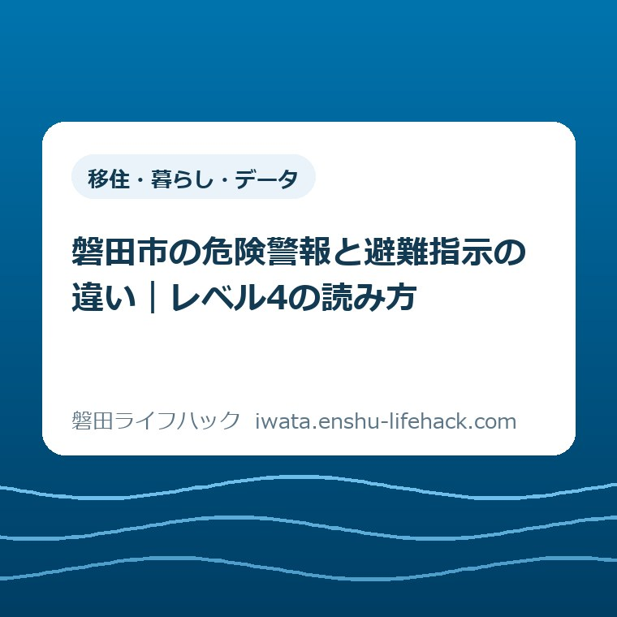

移住・暮らし・データ
磐田市の危険警報と避難指示の違い｜レベル4の読み方

この記事の要点
Q. 危険警報と市の避難指示、どう受け止めればいい？
A. 危険警報は気象庁などが発表する警戒レベル4相当の危険度情報、避難指示は磐田市が対象地域へ出す警戒レベル4の避難の呼びかけです。避難指示の対象となる危険な場所からは全員避難。指示がなくても危険度と周囲の状況を見て早めに安全を確保します。必要な行動は場所や家族の状況で変わります。
通知を読むだけでも、家族は手間を払っている
磐田市で必要な避難行動は、自宅の場所、建物、家族の移動にかかる時間で変わります。制度の説明だけで、すべての世帯に同じ行動を当てはめることはできません。この記事は2026年9月13日に確認した情報の読み方です。現在発表中の警報や避難指示を伝える速報ではありません。
雨の通知を開き、住んでいる地区の名前を探す。その間にも、子どもの支度や離れた親への連絡がある。通知を見ている家族は、すでに情報を集める手間を払っています。そこで似た言葉が並べば、どちらをどう受け止めるのか迷います。用語を知らないことだけを家族の責任にはできません。
大石浩之（磐田市／不動産業）として、私は名前の暗記より、通知から次の行動までの距離を短くしたいと考えています。危険警報と避難指示は、同じ「4」に結び付く情報です。ただし、知らせている内容と発表する主体が違います。片方を読めば、もう片方を見なくてよいという関係でもありません。
家族の防災全体を確かめる項目は、磐田市の防災訓練で家族が確認することに整理しています。今回は、そのうち「届いた情報をどう読むか」に絞ります。防災用品の買い足しや訓練の参加手順ではなく、警報と避難の呼びかけを比べる記事です。
危険警報と避難指示は、発表元と役割が違う
危険警報は、気象庁などが発表する警戒レベル4相当の危険度情報です。避難指示は、磐田市が対象地域に発令する警戒レベル4の避難の呼びかけです。磐田市の「防災気象情報が新しくなります」は、防災気象情報と市の避難情報を区別して説明しています。
| 比べる項目 | 危険警報 | 避難指示 |
|---|---|---|
| 発表・発令する主体 | 気象庁など | 磐田市 |
| 情報の役割 | 災害の危険度を知らせる | 対象地域へ具体的に避難を呼びかける |
| 警戒レベルとの関係 | レベル4相当 | レベル4の避難情報 |
| 受け止め方 | 対象と危険度を確認し、市の指示がなくても自ら避難を判断する | 対象地域の危険な場所から全員避難する |
「相当」は、危険度を避難行動の段階に対応させるための言葉です。「相当だから正式な4より軽い」と読むと、判断を誤ります。一方、危険警報の画面を見て「磐田市がこの地区へ避難指示を出した」と言い換えるのも正確ではありません。家族へ伝えるときも、情報名と発表元を一緒に残します。
市の説明では、避難情報の発令には雨量や河川水位だけでなく、土地利用や過去の災害実績なども踏まえます。気象の危険度を示す情報と、地域に向けた避難の呼びかけには、それぞれの役割があります。同じレベルの数字でも、両方が必ず同時に届くと決めつけない読み方が必要です。
ここは言い切ります。危険警報と避難指示は、別名ではありません。そして、市の避難指示が見当たらないことは、安全の証明ではありません。この2点を離さず覚えるほうが、「どちらが上か」という順位だけで整理するより、家族の判断に使えます。

2026年5月の変更は、28日の切替と29日の運用開始
防災気象情報の変更日は、磐田市の案内と気象庁の案内で表記が異なります。市の2026年5月27日更新ページは「5月28日から」と説明しています。気象庁の2026年4月14日の報道発表は、5月28日に切替作業を行い、5月29日に運用を開始するとしています。
気象庁の発表では、切替作業は5月28日13時頃からで、新しい情報を順次発表する説明です。そのため、28日と29日を単純にどちらか一方の誤りとは扱えません。本記事では「28日から切替、29日運用開始」と区別します。気象庁の現在の特設ページでも、運用開始日は5月29日です。
今回の変更では、情報名にレベルの数字が付くようになりました。市の例では、大雨警報は「レベル3大雨警報」となります。レベル4相当には危険警報が新設され、土砂災害については「レベル4土砂災害危険警報」という例が示されています。危険警報という語だけでなく、前後の数字と災害の種類まで読みます。
意外に感じるのは、危険警報という強い名前が増えても、市の避難指示の役割がなくなったわけではないことです。新名称は、危険度と避難行動の対応を読み取りやすくするためのものです。市の避難情報と一本化された、と理解すると、発表元や対象地域を取り違えます。
古い資料の扱いにも注意が要ります。市の「警戒レベルによる避難情報の発信」は2021年5月21日更新で、表に旧来の気象情報名が残っています。本記事では、市が出すレベル3・4・5の避難情報の説明を参照し、気象情報の名称は2026年の変更説明で照合しました。表全体をそのまま新制度の一覧として写してはいません。
天竜川・太田川・原野谷川と、ほかの川の情報を混同しない
磐田市の変更説明では、洪水予報河川として天竜川・太田川・原野谷川を挙げています。従来の洪水警報・洪水注意報は廃止され、洪水予報河川は「氾濫」、それ以外の河川は「大雨」に関する情報で危険度を伝える整理です。川の名前の通知だけを探すと、確認する範囲が狭くなります。
気象庁の「新たな防災気象情報について（令和8年～）」でも、河川ごとの氾濫情報は大きな河川など対象が限られると説明しています。自宅近くの川の名前が一覧にないことと、その場所に水の危険がないことは別です。大雨の情報も確認する意味がここにあります。
私は、不動産の住所を見るときと同じように、情報の地名を家の位置に戻して読むことを勧めます。「磐田市に情報が出た」というところで止めず、自宅や家族のいる場所との関係を見るためです。ただし、この記事から特定の番地の浸水や土砂災害の危険を判定することはできません。
場所の確認には、磐田市のハザードマップの確認先を使えます。通知の対象と地図を照合する準備は、雨が強まる前にしておきたいものです。川や水路へ見に行って確かめることとは違います。画面の情報と公式の地図を使い、危険な場所へ近づかずに確認します。
避難指示を待つことを、家族の決まりにしない
磐田市は、避難指示が出ていなくてもレベル3・4相当の情報が出た場合、周囲の状況やハザードマップを確認し、自ら判断して早めに安全を確保するよう案内しています。「市が言うまでは動かない」という固定した待ち方は、市自身の説明とも合いません。
市の「警戒レベルによる避難情報の発信」では、レベル3の高齢者等避難は、危険な場所にいる高齢者等が避難する段階です。レベル4の避難指示では、対象地域の危険な場所から全員が避難します。移動に時間のかかる家族も4まで待てる、という意味ではありません。
レベル5の緊急安全確保は、災害が発生または切迫し、命の危険がある段階です。市は必ず発令される情報ではないとも説明しています。5を最後の確認通知として待つ読み方はできません。レベルの表は、1から順に通知を集めてから動くための手順書ではありません。
避難指示の「全員」は、危険な場所にいる人を対象とする表現です。磐田市内のすべての家から、同じ建物へ移動するという意味ではありません。自宅の安全性や移動経路、周囲の状況によって、安全を確保する方法が変わります。「家の2階なら必ず安全」とも、本記事だけでは判断できません。
気象庁は、避難にあたって指定された避難場所にこだわらず、その時点で最善の安全確保行動を取る考え方を示しています。屋外の移動が危険になった場合も、予定した行き先へ無理に進むことを目的にしません。判断の中心は、情報名の読み合わせを終えることではなく、命を守れる場所を確保することです。
大雨への備えや確認先を広く探す場合は、台風・大雨に備える手続きガイドへ進めます。この記事を読んでいる最中に実際の危険が迫っている場合は、読み終えることを待たず、最新の公式情報と周囲の状況に基づいて安全を確保してください。
良い点は、危険度から行動を考えやすくしたこと
新しい防災気象情報について、私はレベルの数字を情報名に付けた点を評価します。家族が別々の端末で情報を見ても、「何という警報だったか」に加え、危険度を共通の数字で話せるからです。名称と行動の対応を毎回一から探す負担を減らす方向だと考えます。
市の説明が、気象庁などの危険度情報と市の避難情報を分けた点も、私は良いと考えます。「警報が来た」とだけ伝わる場面を想定しても、発表元を添える理由を家族に説明できます。通知の数を競うのではなく、一つの通知に何が書かれているかを読む手がかりになります。
市の指示がない場合の安全確保にも触れている点は、私が特に残したい部分です。情報の違いを説明するだけでは、家族が市の通知を待つ理由に使ってしまうかもしれません。違いの説明と、待たずに判断する考え方を同じページに置くことには、生活の段取りとして意味があります。
注文したい点は、発表元まで伝わる案内にすること
防災情報の案内に私が注文したいのは、名称の変更を知らせた先で、家族が発表元を見つけるところまで支えてほしいという点です。ここからは私の意見です。新しい名前の一覧を理解しても、受け取った通知のどこを見ればよいか分からなければ、暮らしの中の迷いは残ります。
たとえば、案内の図に「情報名・発表元・対象・発表時刻」を一組で載せる形を望みます。これは特定の配信サービスに欠陥があるという指摘ではありません。本記事では各アプリの表示仕様まで検証していません。どの端末でも、詳細画面へ進んで確認する習慣につながる案内があると助かる、という提案です。
日付の違いも、切替と運用開始を併記したほうが親切だと私は考えます。家族が検索して28日と29日の両方を見つけたとき、制度全体を疑って調べ直す手間を減らせるからです。数字の差を小さいこととして片付けず、読む側が途中で止まる理由を一つずつ取り除きたいと思います。
対案・結論——今日は家族で発表元を一つ確認する
今日の一歩として私が提案するのは、家族が使う防災情報の画面を一つ開き、誰が発表した情報なのかを一緒に確かめることです。新しいアプリをいくつも入れる作業から始める必要はありません。通知を受け取る場所と、情報を発表する主体が同じとは限らない点を、実際の画面で確認します。
確認する画面は、普段見ている情報サービスの詳細画面か、この記事の出典にある市の公式説明で構いません。発表中の情報がないときは、無理に古い警報を探す必要はありません。公式説明から「気象庁などの情報」と「磐田市の避難情報」の区別が読めれば、今日の確認になります。
家族で言葉にするなら、「この画面は何の情報で、発表元はどこ？」という一問です。発表元が分からない場合は、分からないまま市の避難指示と決めつけず、公式の詳細へ進みます。情報を受け取る仕組みを見直す必要がある場合だけ、磐田市の災害情報の入手方法を参照してください。
実際の警報を家族へ共有する際は、発表元に加えて対象と発表時刻も残す、というのが私の提案です。短い見出しだけを切り取ると、別の地区や以前の情報と混ざりかねません。共有した画像を最新情報の代わりにせず、公式の詳細を開き直せる形にしておくと、次の確認につながります。

家族の連絡文も、短くて構いません。私は「発表元：○○／情報名：○○／対象：○○／発表時刻：○○／確認先：公式ページ」という空欄の形を勧めます。避難の必要が迫っているときに欄を全部埋める義務ではありません。平時に見分け方を揃え、緊急時の連絡を短くするための準備です。
大石の視点——名前を覚えさせるだけでは、避難は進まない
私は、防災の仕組みを「家族が次に何をできるか」で評価したいと考えています。名前を覚えさせるだけでは、家族の避難は進まない。数字が付いたことで見分けやすくなっても、誰が情報を開き、誰へ伝えるかが決まっていなければ、生活の段取りにはまだ落ちていません。ここは制度の説明とは分けた、私の判断です。
私にも迷いはあります。説明を短くしようとすると、「危険警報は危険度、避難指示は行動」とだけ書きたくなります。しかし、その省略では、危険警報の段階では行動しなくてよいと受け取られるおそれがあります。だから「指示がなくても自ら安全確保を判断する」という一文は、短くするためにも削れません。
離れた実家や空き家がある場合も、私は建物の確認より人の安全を先に置きます。被害を受けた後の記録や証明の話は、磐田市の空き家と被災証明書の記事で整理しています。その手続きを理由に、大雨の最中に現地へ見に行く順番にはしません。安全が確保された後の話として分けます。
家族が今日、発表元を一つ見つけられれば、それは具体的な前進です。用語の試験をするのではなく、次に情報を開く場所を共有する。私は、そのくらい小さくて確かな準備から始めたいと考えます。各家庭の避難先や移動の判断は、本記事の一般説明だけで決めず、土地と家族の条件に戻して確認してください。
よくある質問
危険警報と避難指示の読み分けについて、3つの質問に答えます。回答は2026年9月13日に確認した公式説明に基づきます。現在の警報や避難情報は、発表時刻と対象を含めて公式の最新情報を確認してください。
危険警報は、磐田市の避難指示と同じですか？
同じではありません。危険警報は気象庁などが発表する警戒レベル4相当の危険度情報、避難指示は磐田市が対象地域に出すレベル4の避難の呼びかけです。避難指示の対象となる危険な場所からは全員避難します。危険警報も行動を考える情報であり、市の指示がないことを安全の根拠にはできません。
避難指示がなければ、自宅で待っていてよいですか？
避難指示がないだけでは、安全とは判断できません。磐田市はレベル3・4相当の情報が出た場合、周囲の状況やハザードマップを確認して自ら判断し、早めに安全を確保するよう案内しています。必要な行動は自宅や家族の条件で変わります。レベル5の緊急安全確保は必ず発令される情報ではなく、待つ目安にはできません。
変更日は2026年5月28日と29日のどちらですか？
磐田市の案内は5月28日からと記載しています。気象庁の報道発表では、5月28日13時頃から切替作業を行い、新情報を順次発表し、5月29日に運用を開始する説明です。本記事は「28日から切替、29日運用開始」と区別しています。気象庁の特設ページでも運用開始日は29日で、市の案内と併せて確認できます。
本記事は非公式の解説で、個別の場所の安全を保証するものではありません。制度・名称・発令状況は変わる場合があります。最後は、磐田市の公式ページで説明を確認し、実際の避難では最新の公式情報と周囲の状況に基づいて安全を確保してください。
参考にした公式情報
- 防災気象情報が新しくなります／磐田市（2026年9月13日確認・ページ更新日2026年5月27日）
- 警戒レベルによる避難情報の発信／磐田市（2026年9月13日確認・ページ更新日2021年5月21日。避難情報のレベル3〜5を参照）
- 新たな防災気象情報について（令和8年～）／気象庁（2026年9月13日確認・運用開始日と新名称を参照）
- 5月29日から新たな防災気象情報の運用を開始します／気象庁（2026年9月13日確認・2026年4月14日発表。28日の切替作業と29日の運用開始を区別）

最終確認日：2026-09-13 ／ 本記事は公表情報と執筆者の見解を分けて記載しています。制度・数値・公開状況は変更される場合があるため、最新情報は磐田市公式ページでご確認ください。